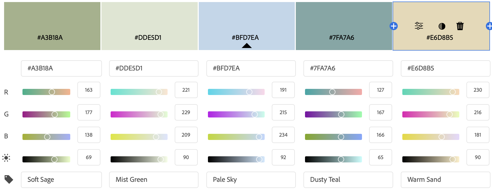
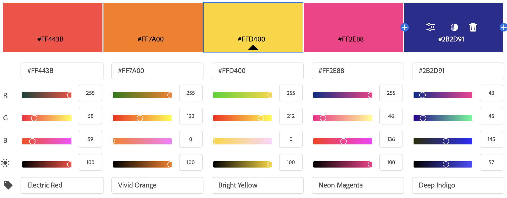
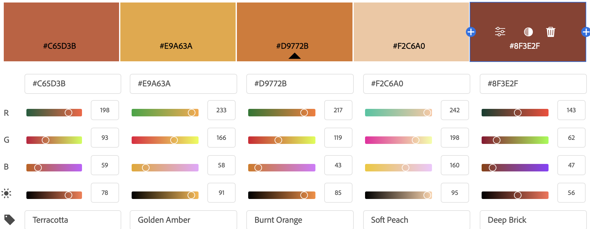
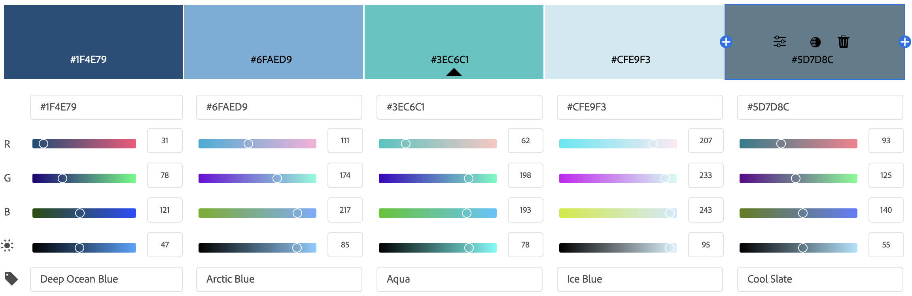
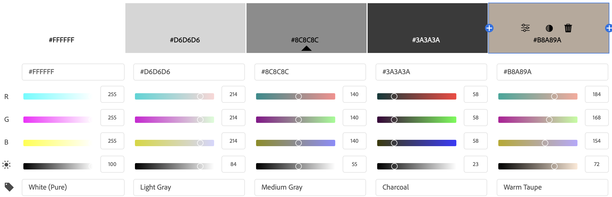

| Color Theme | Description |
|---|---|
|
Relaxation  |
Moods evoked: calm, meditative Methodology: mimics nature, combination of greens and blues (analogous colors) contrasted with soft tone of sand. |
|
Excitement  |
Moods evoked: energetic, playful Methodology: red, orange, and yellow for vibrance/energy, indigo as complementary contrast. |
|
Warmth  |
Moods evoked: comfort, coziness, calm/ease Methodology: mimics sunlight on clay. Analogous red, orange, and yellow. |
|
Cool  |
Moods evoked: fresh, brisk, clean Methodology: mimics ice and water. Analogous blues and blue-greens, offset by slate. |
|
Neutrality  |
Moods evoked: minimalism, balance, subtle Methodology: create a progression from light to dark(er), taupe for a bit of warmth in the monochromatic color scheme. |
Images generated in Adobe Color.